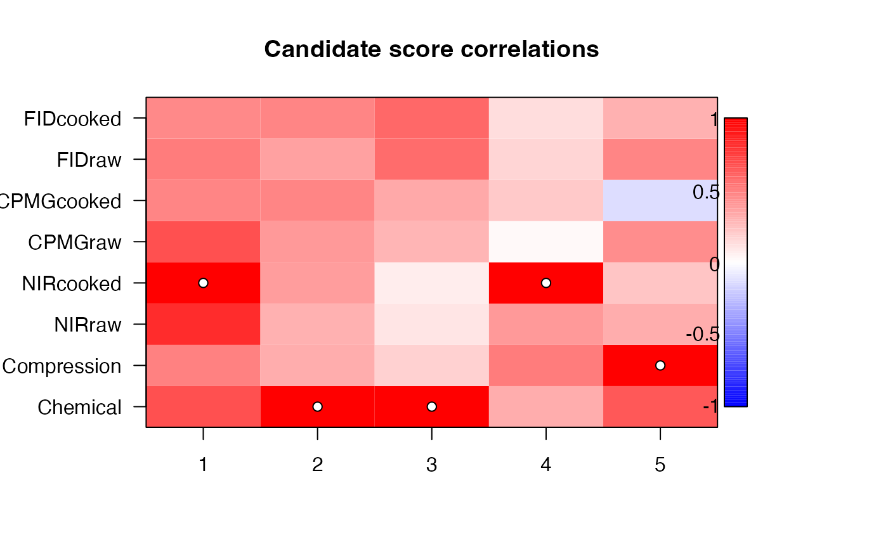
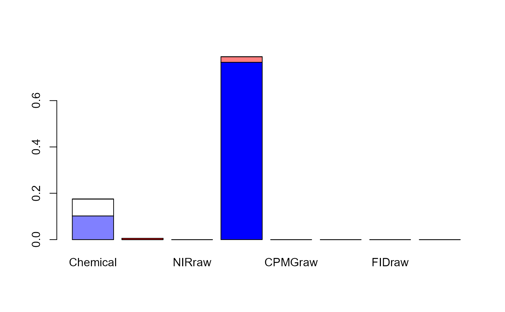

Various plotting procedures for rosa objects.
Arguments
- x
A
rosaobject- type
An optional
characterfor selecting the plot type. Forimage.rosathe options are: "correlation" (default), "residual" or "order". Forbarplot.rosathe options indicate: explained variance should be based on training data ("train") or cross-validation ("CV").- ncomp
Integer to control the number of components to plot (if fewer than the fitted number of components).
- col
Colours used for the image and bar plot, defaulting to mcolors(128).
- legend
Logical indicating if a legend should be included (default = TRUE) for
image.rosa.- mar
Figure margins, default = c(5,6,4,7) for
image.rosa.- las
Axis text direction, default = 1 for
image.rosa.- ...
Additional parameters passed to
loadingplot,image,axis,color.legend, orbarplot.- height
A
rosaobject.
Value
No return.
Details
Usage of the functions are shown using generics in the examples below. image.rosa
makes an image plot of each candidate score's correlation to the winner or the block-wise
response residual. These plots can be used to find alternative block selection for tweaking
the ROSA model. barplot.rosa makes barplot of block and component explained variances.
loadingweightsplot is an adaptation of pls::loadingplot to plot loading weights.
References
Liland, K.H., Næs, T., and Indahl, U.G. (2016). ROSA - a fast extension of partial least squares regression for multiblock data analysis. Journal of Chemometrics, 30, 651–662, doi:10.1002/cem.2824.
See also
Overviews of available methods, multiblock, and methods organised by main structure: basic, unsupervised, asca, supervised and complex.
Common functions for computation and extraction of results in rosa_results.
Examples
data(potato)
mod <- rosa(Sensory[,1] ~ ., data = potato, ncomp = 5)
image(mod)

barplot(mod)

loadingweightplot(mod)